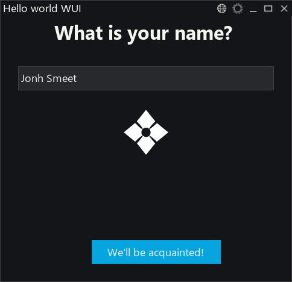

Hello world application
As a basis for any project using WUI a minimal application is offered, which, however, is immediately made for the possibility of its expansion to a large project.
This application is located in examples/hello_world and includes the full availability of the necessary resource files. On Windows the application is assembled into a monolithic exe, on Linux/Mac it stores resources in the "res/" folder next to the executable. For real applications it is better to specify the path "~/.app_name/res" or, if the application is installed from root, something like "/opt/app_name/res"
Shows the use of theme, locale, and config, in an application that has two color schemes (dark and light), two languages, and stores its configuration in the registry on Windows and in an ini file on Linux.
main.cpp
#ifdef _WIN32
int APIENTRY wWinMain(_In_ HINSTANCE hInstance,
_In_opt_ HINSTANCE hPrevInstance,
_In_ LPWSTR lpCmdLine,
_In_ int nCmdShow)
{
Gdiplus::GdiplusStartupInput gdiplusStartupInput;
ULONG_PTR gdiplusToken;
Gdiplus::GdiplusStartup(&gdiplusToken, &gdiplusStartupInput, NULL);
#elif __linux__
int main(int argc, char *argv[])
{
if (setlocale(LC_ALL, "") == NULL) {}
#endif
#ifdef _WIN32
auto ok = wui::config::use_registry("Software\\wui\\hello_world");
#else
auto ok = wui::config::use_ini_file(“hello_world.ini”);
if (!ok)
{
std::cerr << wui::config::get_error().str() << std::endl;
return -1;
}
#endif
wui::error err;
wui::set_app_locales({
{ wui::locale_type::eng, "English", "res/en_locale.json", TXT_LOCALE_EN },
{ wui::locale_type::rus, "Русский", "res/ru_locale.json", TXT_LOCALE_RU },
});
auto current_locale = static_cast<wui::locale_type>(wui::config::get_int("User", "Locale",
static_cast<int32_t>(wui::get_default_system_locale())));
wui::set_current_app_locale(current_locale);
wui::set_locale_from_type(current_locale, err);
if (!err.is_ok())
{
std::cerr << err.str() << std::endl;
return -1;
}
wui::set_app_themes({
{ "dark", "res/dark.json", TXT_DARK_THEME },
{ "light", "res/light.json", TXT_LIGHT_THEME }
});
auto current_theme = wui::config::get_string("User", "Theme", "dark");
wui::set_current_app_theme(current_theme);
wui::set_default_theme_from_name(current_theme, err);
if (!err.is_ok())
{
std::cerr << err.str() << std::endl;
return -1;
}
MainFrame mainFrame;
mainFrame.Run();
#ifdef _WIN32
// Main message loop
MSG msg;
while (GetMessage(&msg, nullptr, 0, 0))
{
TranslateMessage(&msg);
DispatchMessage(&msg);
}
return (int) msg.wParam;
#else
// Wait for main window
while (mainFrame.Runned())
{
std::this_thread::sleep_for(std::chrono::milliseconds(100));
}
return 0;
#endif
}
The demo application shows the logo, displays a caption and provides an input field. When the button is clicked, a message box is displayed and the application is closed. It also shows tracking of the user closing the window and displaying a confirmation message.

In the following screenshot, the theme is changed to light, the language to Russian and the "Nice to meet you" button is pressed

MainFrame.h
class MainFrame
{
public:
MainFrame();
void Run();
bool Runned() const;
private:
static const int32_t WND_WIDTH = 400, WND_HEIGHT = 400;
std::shared_ptr<wui::window> window;
std::shared_ptr<wui::image> logoImage;
std::shared_ptr<wui::text> whatsYourNameText;
std::shared_ptr<wui::input> userNameInput;
std::shared_ptr<wui::button> okButton;
std::shared_ptr<wui::message> messageBox;
bool runned;
void ReceiveEvents(const wui::event &ev);
void UpdateControlsPosition();
};
MainFrame.cpp
MainFrame::MainFrame()
: window(new wui::window()),
logoImage(new wui::image(IMG_LOGO)),
whatsYourNameText(new wui::text(wui::locale("main_frame", "whats_your_name_text"), wui::text_alignment::center, "h1_text")),
userNameInput(new wui::input(wui::config::get_string("User", "Name", ""))),
okButton(new wui::button(wui::locale("main_frame", "ok_button"), [this](){
wui::config::set_string("User", "Name", userNameInput->text());
messageBox->show(wui::locale("main_frame", "hello_text") + userNameInput->text(),
wui::locale("main_frame", "ok_message_caption"), wui::message_icon::information, wui::message_button::ok, [this](wui::message_result) {
runned = false; window->destroy(); }); })),
messageBox(new wui::message(window)),
runned(false)
{
window->subscribe(std::bind(&MainFrame::ReceiveEvents,
this,
std::placeholders::_1),
static_cast<wui::event_type>(static_cast<int32_t>(wui::event_type::internal) |
static_cast<int32_t>(wui::event_type::system) |
static_cast<int32_t>(wui::event_type::keyboard)));
window->add_control(logoImage, { 0 });
window->add_control(whatsYourNameText, { 0 });
window->add_control(userNameInput, { 0 });
window->add_control(okButton, { 0 });
window->set_default_push_control(okButton);
window->set_min_size(WND_WIDTH - 1, WND_HEIGHT - 1);
}
void MainFrame::Run()
{
if (runned)
{
return;
}
runned = true;
UpdateControlsPosition();
window->set_control_callback([&](wui::window_control control, std::string &tooltip_text, bool &continue_) {
switch (control)
{
case wui::window_control::theme:
{
wui::error err;
auto nextTheme = wui::get_next_app_theme();
wui::set_default_theme_from_name(nextTheme, err);
if (!err.is_ok())
{
std::cerr << err.str() << std::endl;
return;
}
wui::config::set_string("User", "Theme", nextTheme);
window->update_theme();
}
break;
case wui::window_control::lang:
{
auto nextLocale = wui::get_next_app_locale();
wui::set_locale_from_type(nextLocale, err);
if (!err.is_ok())
{
std::cerr << err.str() << std::endl;
return;
}
wui::config::set_int("User", "Locale", static_cast<int32_t>(nextLocale));
tooltip_text = wui::locale("window", "switch_lang");
window->set_caption(wui::locale("main_frame", "caption"));
whatsYourNameText->set_text(wui::locale("main_frame", "whats_your_name_text"));
okButton->set_caption(wui::locale("main_frame", "ok_button"));
}
break;
case wui::window_control::close:
if (runned)
{
continue_ = false;
messageBox->show(wui::locale("main_frame", "confirm_close_text"),
wui::locale("main_frame", "cross_message_caption"), wui::message_icon::information, wui::message_button::yes_no,
[this, &continue_](wui::message_result r) {
if (r == wui::message_result::yes)
{
#ifdef _WIN32
PostQuitMessage(IDCANCEL);
#else
runned = false;
#endif
}
});
}
break;
}
});
auto width = wui::config::get_int("MainFrame", "Width", WND_WIDTH);
auto height = wui::config::get_int("MainFrame", "Height", WND_HEIGHT);
window->init(wui::locale("main_frame", "caption"), { -1, -1, width, height },
static_cast<wui::window_style>(static_cast<uint32_t>(wui::window_style::frame) |
static_cast<uint32_t>(wui::window_style::switch_theme_button) |
static_cast<uint32_t>(wui::window_style::switch_lang_button) |
static_cast<uint32_t>(wui::window_style::border_all)), [this]() {
#ifdef _WIN32
PostQuitMessage(IDCANCEL);
#else
runned = false;
#endif
});
}
void MainFrame::ReceiveEvents(const wui::event &ev)
{
if (ev.type == wui::event_type::internal)
{
switch (ev.internal_event_.type)
{
case wui::internal_event_type::size_changed:
if (window->state() == wui::window_state::normal &&
ev.internal_event_.x > 0 && ev.internal_event_.y > 0)
{
wui::config::set_int("MainFrame", "Width", ev.internal_event_.x);
wui::config::set_int("MainFrame", "Height", ev.internal_event_.y);
}
UpdateControlsPosition();
break;
case wui::internal_event_type::window_expanded:
case wui::internal_event_type::window_normalized:
UpdateControlsPosition();
break;
}
}
}
void MainFrame::UpdateControlsPosition()
{
const auto width = window->position().width(), height = window->position().height();
const int32_t top = 40, element_height = 40, space = 30;
wui::rect pos = { space, top, width - space, top + element_height };
whatsYourNameText->set_position(pos);
wui::line_up_top_bottom(pos, element_height, space);
userNameInput->set_position(pos);
wui::line_up_top_bottom(pos, element_height * 2, space);
int32_t center = width / 2;
pos.left = center - element_height, pos.right = center + element_height;
logoImage->set_position(pos);
okButton->set_position({center - 90,
height - element_height - space,
center + 90,
height - space
});
}
bool MainFrame::Runned() const
{
return runned;
}
The window and controls are created in the MainFrame constructor. The application subscribes to events and adds controls to the window. Controls' callbacks are handled with the help of lambdas for the sake of brevity.
The Run() method starts the window and contains a lambda that handles callbacks from window controls (language and theme buttons). ReceiveEvents() receives events from the window and is used to respond to window resizing by calling UpdateControlsPosition(). which recalculates the new coordinates of the controls.
Resource.h
#ifdef _WIN32
#define IDI_MAIN_ICON 107
#define IMG_LOGO 109
#define IMG_ACCOUNT 110
#define IMG_MENU 111
#define TXT_DARK_THEME 200
#define TXT_LIGHT_THEME 201
#define TXT_LOCALE_EN 210
#define TXT_LOCALE_RU 211
#else // _WIN32
static int TXT_LOCALE_EN = 0, TXT_LOCALE_RU = 0, TXT_DARK_THEME = 0, TXT_LIGHT_THEME = 0;
static constexpr const char* IMG_LOGO = "logo.png";
static constexpr const char* IMG_ACCOUNT = "account.png";
static constexpr const char* IMG_MENU = "menu.png";
#endif
hw.rc
#include "Resource.h"
#define APSTUDIO_READONLY_SYMBOLS
#define APSTUDIO_HIDDEN_SYMBOLS
#include "windows.h"
#undef APSTUDIO_HIDDEN_SYMBOLS
/////////////////////////////////////////////////////////////////////////////
#undef APSTUDIO_READONLY_SYMBOLS
// Icon
IDI_APPLICATION ICON "res\\hw.ico"
// Images
IMG_LOGO IMAGES_DARK "res\\images\\dark\\logo.png"
IMG_LOGO IMAGES_LIGHT "res\\images\\light\\logo.png"
IMG_ACCOUNT IMAGES_DARK "res\\images\\dark\\account.png"
IMG_ACCOUNT IMAGES_LIGHT "res\\images\\light\\account.png"
IMG_MENU IMAGES_DARK "res\\images\\dark\\menu.png"
IMG_MENU IMAGES_LIGHT "res\\images\\light\\menu.png"
// Theme / locale jsons
TXT_DARK_THEME JSONS "res\\dark.json"
TXT_LIGHT_THEME JSONS "res\\light.json"
TXT_LOCALE_EN JSONS "res\\en_locale.json"
TXT_LOCALE_RU JSONS "res\\ru_locale.json"
/////////////////////////////////////////////////////////////////////////////
#endif // not APSTUDIO_INVOKED